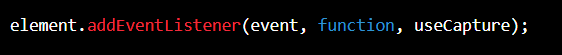
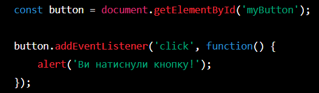

Обробка подій
Обробка подій є ключовим аспектом програмування на JavaScript.
Події відбуваються в реальному часі і можуть бути сприйняті браузером або веб-додатком.
Для обробки подій в JavaScript використовується механізм "addEventListener".
Метод "addEventListener" використовується для додавання обробника подій до елемента веб-сторінки. Синтаксис методу виглядає так:

- "element" - елемент, до якого додається обробник подій
- "event" - тип події, яку потрібно обробити (наприклад, "click", "mouseover", "keydown" тощо)
- "function" - функція, яка виконується при виникненні події
- "useCapture" - булеве значення, яке вказує, чи виконується обробник подій на етапі захоплення (true) або на етапі бульбашки (false)
Приклад
Ось приклад використання методу "addEventListener" для обробки події "click":

Цей код додає обробник подій до кнопки на сторінці, який виконує функцію з виводом повідомлення в консоль при натисканні на кнопку.